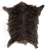
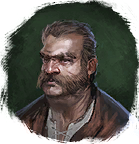

Шкура Вепря
Предметы / С врагов
Открыть в интерактивной вики →
| Вес | 7 |
|---|---|
| Цена | 50 |
Описание
Кожа, снятая с кабана из Разбойничьего Леса. Возможно, кто-то из лесорубов ее купит. Покупает

Дровосек Яцек| Шкура, снятая с кабана из Разбойничьего Леса. Может, кто-то из лесорубов захочет её купить. |
Рецепт
Торговля: 900
Дроп
Применение
|
Как добыть
Получаем за победу над:
|